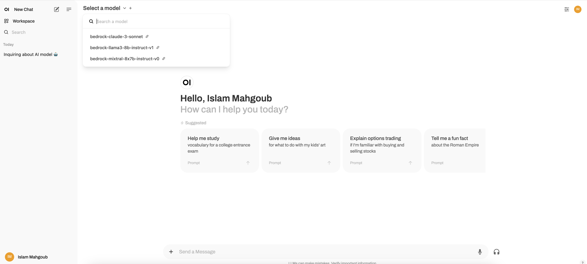

(Optional) Connect Open WebUI to LiteLLM
Open WebUI is a web frontend that allows users to interact with LLMs. It supports locally running LLMs using Ollama, and OpenAI-compatible remote endpoints. In this implementation, we are configuring a remote endpoint that points to LiteLLM to show how LiteLLM allows for accessing Bedrock through an OpenAI-compatible interface.
Pre-requisites
- A domain that can be used for hosting Open WebUI, a web frontend that allows users to interact with LLMs; it will be used to test LiteLLM setup.
- A digital certificate in AWS Certificate Manager (ACM) for enabling TLS on Open WebUI
Open WebUI deployment
-
Configure environment variables; replace
<open-webui-hostname>,<open-webui-cert-arn>with the corresponding hostnames and ACM certificates ARN. -
Install Open WebUI:
helm repo add open-webui https://helm.openwebui.com/ helm repo update helm upgrade \ --install open-webui open-webui/open-webui \ --namespace open-webui \ --create-namespace \ -f bedrock-litellm/helm/open-webui-private-values.yamlThe first user signing up will get admin access. So, initially, Open WebUI will be only accessible from within the cluster to securely create the first/admin user. Subsequent sign ups will be in pending state till they are approved by the admin user.
-
Use
kubectl port-forwardto allow access to Open WebUI from the machine used for installation:If you are using Cloud9, you can access Open WebUI by clicking "Preview" (top bar), then "Preview Running Application".
-
Sign-up (remember, first signed up user get admin access), then go to User icon at top right, settings, admin settings, connections, then edit OpenAI API to be as follows:
Click on "Verify connection" button to make sure connectivity is in-place, then save. You should be able to see three of the Bedrock models available in Open WebUI as depicted in the screenshot below:

Now, we have the admin user created, we can make Open WebUI accessible publicly.
-
Update Open WebUI helm release to include
Ingressobject for exposing it:envsubst < $BEDROCK_LITELLM_DIR/helm/open-webui-public-values.yaml | helm upgrade \ open-webui open-webui/open-webui \ --namespace open-webui \ -f -Note
ELB needs a minute or so to complete the target registration; if the URL above did not work for you, wait for a few seconds for the registration to get completed.
-
Extract Open WebUI URL:
-
Add a CNAME record for
<open-webui-hostname>(check prerequisities section) that points to the ALB host name, then access Open WebUI using<open-webui-hostname>. -
Edit
litellm/proxy_config.yaml, update the IAM policylitellm-bedrock-policy.json, and enable access through the Bedrock console to add more Bedrock models on LiteLLM.